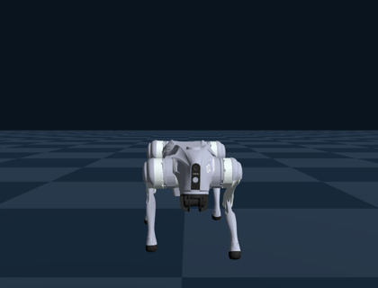
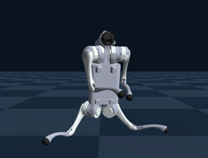
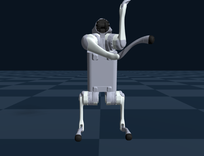

Physical AI 応用1講座 最終課題 説明資料 j_shimokawatoko
コード: GitHub（URL は omnicampus に提出） 動画: YouTube（65秒、等倍速）
四足ロボットの Unitree Go2 に、Genesis 上の強化学習（PPO）で、後ろ足で立ってバランスを保つ動作を学習させた。 Genesis 公式の Go2 歩行サンプルをもとに、アルゴリズム、ネットワーク、観測、行動は変えず、報酬と終了条件だけを変更した。 報酬を変えるだけで歩行とは別の動作を学習できるかを確かめるのが目的である。
| シミュレータ | Genesis 1.4.5（Go2 のモデルは Genesis 同梱のもの） |
| 学習 | PPO（rsl-rl-lib 5.5.2）。Actor と Critic は 3 層の MLP（512-256-128） |
| 観測（45次元） | 胴体の角速度、胴体から見た重力の向き、速度指令、関節の角度と角速度、前回の行動 |
| 行動（12次元） | 各関節の目標角度。PD 制御でトルクに変換する（50Hz） |
| 計算機 | MacBook Pro（M1 Pro、16GB）。4096 環境を並列に実行 |
ベースにしたコードは Genesis 公式の examples/locomotion（Apache-2.0）。上の設定はすべて公式のままである。
報酬は Genesis や rsl-rl の機能ではなく、環境のクラス（src/go2_env.py）に項目ごとの関数として定義している。 毎ステップ Genesis から胴体の位置・向き・速度、関節の角度、脚のリンクの位置と向きを取得し、各関数で値を計算して、重みを掛けた和を報酬として PPO に渡す。 公式サンプルにあるのは表の上 6 項目で、それ以外は今回追加した関数である。
| 項目 | 使った情報と計算 | 公式 | 2足立ち | 姿勢修正 |
| 速度の追従（前後・左右） | 胴体の水平速度と指令の差の二乗 e から exp(−e/0.25) | 1.0 | 0.5 | 0.5 |
| 速度の追従（旋回） | 胴体の鉛直軸まわりの角速度と指令の差から、同様に計算 | 0.2 | 0.2 | 0.2 |
| 上下の速度 | 胴体の上下方向の速度の二乗 | −1.0 | −0.2 | −0.2 |
| 行動の変化 | 前回と今回の行動（目標角度）の差の二乗和 | −0.005 | −0.01 | −0.01 |
| 胴体の高さを保つ | （胴体の高さ − 0.30 m）の二乗 | −50 | ||
| 基本姿勢からのずれ | 12 関節の角度と、四つ足の基本姿勢の角度との差の絶対値の和 | −0.1 | ||
| 胴体の起き具合 | 胴体から見た重力の向きの前後成分 gx から ((1−gx)/2)²。水平で 0.25、直立で 1 | 1.0 | 5.0 | |
| 胴体の高さ | 胴体の高さを 0〜1 に直線で変換（0.30〜0.50 m、姿勢修正では 0.28〜0.42 m） | 1.0 | 0.3 | |
| 前足の高さ | 前足のすねのリンクの位置と向きから、0.213 m 先の足先の高さを求め、0〜0.10 m を 0〜1 に変換 | 0.5 | 1.0 | |
| 股を閉じる | 後ろ足の股関節の角度 θ。加点は 1−|θ|/0.5 rad、罰則は θ² | 2.0 / −2.0 | ||
| 膝を曲げる | 後ろ足の膝関節の角度 θ。加点は −80° に近いほど高いガウス関数、罰則は −69° より伸びた分の二乗 | 0.8 / −3.0 | ||
| 足を腰幅に置く | 後ろ足の足先の位置を胴体から見た座標に直し、左右方向の位置 y を使う。加点は |y| が 0.15 m に近いほど高く、罰則は 0.15 m を超えた分の二乗 | 1.0 / −20 | ||
| 左右の対称性 | 左右の股関節の角度の和と、左右の足先の y の和が、それぞれ 0 に近いほど高い | 2.0 / 1.0 | ||
| 横に傾かない | 胴体から見た重力の向きの左右成分 gy が 0 に近いほど高い | 0.5 | ||
| 終了条件 | 胴体の傾き（重力の向き）と高さ | 10 度傾く | 0.15 m より低い、または横に約 45 度傾く | |
| 学習 | 101 iter 約3分 | 500 iter 約16分 | 計 約2000 iter | |



| 四足歩行（公式） | 2足立ち | 2足立ち・姿勢修正 | |
| 動作 | 0.55 m/s で前進 | 後ろ足で立つ | 後ろ足で立つ |
| 後ろ足の間隔 | 0.79 m | 0.30 m | |
| 股の角度（左 / 右） | +60°（可動範囲の端）/ −38° | +2° / −2° | |
| 膝の角度（左 / 右） | −48° / −48°（可動範囲の端） | −88° / −85° | |
| 転倒 | なし | なし | なし |
図はどれも正面から見たもの。関節の角度と足の間隔は、立ち上がった後の 1.5〜5 秒の平均である。
姿勢修正後のモデルに前進の指令を加え、速度への追従、両足での跳躍、片足立ちなどを報酬にして学習させたが、前に歩くようにはならなかった。 立ち止まったまま前後に揺れる、その場で跳ぶ、片足で立ったまま足を下ろさない、といった動作になった。 歩くより立っているほうが報酬を得やすかったことと、後ろ足は接地が点に近く片足立ちが不安定なことが原因だと考えている。